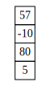
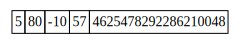
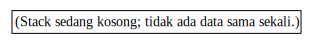
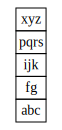
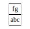

import numpy as np
import graphviz as gvModul 5 Struktur Data: Stack
Stack
Offline di Departemen Matematika
Kembali ke Struktur Data
Di praktikum kali ini tentang stack, kita akan membahas implementasi stack (baik dengan array maupun dengan linked list) serta contoh penggunaannya.
Implementasi dan contoh penggunaan stack
Implementasi stack dengan array
class ArrayStack:
def __init__(self, dtype, max):
self.dtype = dtype
self.max = max
self.array = np.empty(max, dtype=dtype)
self.top = -1
def get_size(self):
return self.top + 1
def get_capacity(self):
return self.max
def get_dtype(self):
return self.dtype
def is_empty(self):
if self.get_size() > 0:
return False
else:
return True
def is_full(self):
if self.get_size() >= self.get_capacity():
# if top+1 >= max
# atau sama saja, if top >= max-1
return True
else:
return False
def push(self, newdata):
if self.is_full():
print("Error push: stack sudah penuh.")
else:
self.top += 1
self.array[self.top] = newdata
def peek(self):
if self.is_empty():
print("Error peek: stack sedang kosong.")
return None
else:
return self.array[self.top]
def pop(self):
if self.is_empty():
print("Error pop: stack sudah kosong sebelumnya.")
return None
else:
output = self.array[self.top]
self.top -= 1
return output
def print_stack(self):
i = self.top
while i >= 0:
print(self.array[i])
i -= 1
# print array
def print_storage(self):
print(self.array)
def get_digraph_stack(self):
new_digraph = gv.Digraph()
# gambar akan terdiri dari satu tabel saja, satu kolom,
# dan tiap baris adalah tiap elemen di stack
tabel_besar = "<"
# pembuka tabel
tabel_besar += "<TABLE BORDER=\"0\" CELLBORDER=\"1\" CELLSPACING=\"0\">"
# menambahkan tiap elemen sebagai baris tersendiri
i = self.top
if i < 0:
tabel_besar += "<TR><TD>"
tabel_besar += "(Stack sedang kosong; tidak ada data sama sekali.)"
tabel_besar += "</TD></TR>"
while i >= 0:
tabel_besar += "<TR><TD>"
tabel_besar += str(self.array[i])
tabel_besar += "</TD></TR>"
i -= 1
# penutup tabel
tabel_besar += "</TABLE>"
tabel_besar += ">"
new_digraph.node("ArrayStack", shape="none", label=tabel_besar)
return new_digraph
def get_digraph_storage(self):
# menggambar array
new_digraph = gv.Digraph()
# pembuka tabel
tabel_besar = "<"
tabel_besar += "<TABLE BORDER=\"0\" CELLBORDER=\"1\" CELLSPACING=\"0\">"
# tabel hanya terdiri dari satu baris
tabel_besar += "<TR>"
# satu elemen per kolom
for i in range(self.get_capacity()):
tabel_besar += "<TD>"
tabel_besar += str(self.array[i])
tabel_besar += "</TD>"
# penutup baris
tabel_besar += "</TR>"
# penutup tabel
tabel_besar += "</TABLE>"
tabel_besar += ">"
new_digraph.node("array", shape="none", label=tabel_besar)
return new_digrapharraystack = ArrayStack(int, 5)
arraystack.push(5)
arraystack.push(80)
arraystack.push(100)arraystack.print_stack()100
80
5print(arraystack.get_capacity())5arraystack.print_storage()[ 5 80 100
4622241330054037504 4625478292286210048]print(arraystack.peek())100arraystack.print_stack()100
80
5nilai = arraystack.pop()
print(nilai)100arraystack.print_stack()80
5arraystack.print_storage()[ 5 80 100
4622241330054037504 4625478292286210048]arraystack.push(-10)
arraystack.push(57)arraystack.print_stack()57
-10
80
5arraystack.print_storage()[ 5 80 -10
57 4625478292286210048]graf1 = arraystack.get_digraph_stack()display(graf1)
graf2 = arraystack.get_digraph_storage()display(graf2)
arraystack.push(90)arraystack.push(46)Error push: stack sudah penuh.arraystack.print_storage()[ 5 80 -10 57 90]print(arraystack.pop())
print(arraystack.pop())
print(arraystack.pop())
print(arraystack.pop())
print(arraystack.pop())90
57
-10
80
5print(arraystack.pop())Error pop: stack sudah kosong sebelumnya.
Noneprint(arraystack.get_size())0arraystack.print_stack()arraystack.print_storage()[ 5 80 -10 57 90]display(arraystack.get_digraph_stack())
Implementasi stack dengan singly-inked list
class SLNode:
def __init__(self, data, next=None):
self.data = data
self.next = nextclass SLStack:
def __init__(self):
# "head" ganti nama jadi top
self.top = None
def is_empty(self):
if self.top == None:
return True
else:
return False
def push(self, newdata):
newnode = SLNode(newdata)
newnode.next = self.top
self.top = newnode
def peek(self):
if self.is_empty():
print("Error peek: stack sedang kosong.")
else:
return self.top.data
def pop(self):
if self.is_empty():
print("Error pop: stack sudah kosong sebelumnya.")
else:
output = self.top.data
temp = self.top
self.top = self.top.next
del temp
return output
def get_size(self):
temp = self.top
size = 0
while temp != None:
size += 1
temp = temp.next
return size
def print_stack(self):
temp = self.top
while temp != None:
print(temp.data)
temp = temp.next
# print linked list
def print_storage(self):
print("top -> ", end="")
temp = self.top
while temp != None:
print(temp.data, end=" -> ")
temp = temp.next
print("None")
def get_digraph_stack(self):
new_digraph = gv.Digraph()
# gambar akan terdiri dari satu tabel saja, satu kolom,
# dan tiap baris adalah tiap elemen di stack
tabel_besar = ""
tabel_besar += "<"
tabel_besar += "<TABLE BORDER=\"0\" CELLBORDER=\"1\" CELLSPACING=\"0\">"
temp = self.top
if temp == None:
tabel_besar += "<TR><TD>"
tabel_besar += "(Stack sedang kosong; tidak ada data sama sekali.)"
tabel_besar += "</TD></TR>"
while temp != None:
tabel_besar += "<TR><TD>"
tabel_besar += str(temp.data)
tabel_besar += "</TD></TR>"
temp = temp.next
# penutup tabel
tabel_besar += "</TABLE>"
tabel_besar += ">"
new_digraph.node("SLStack", shape="none", label=tabel_besar)
return new_digraph
# copas dari modul linked list, tapi head ganti jadi top
def get_digraph_storage(self):
# Buat digraph baru yang sifatnya dari kiri ke kanan
new_digraph = gv.Digraph(graph_attr={"rankdir": "LR"})
# Pointer untuk menunjuk ke tiap node, mulai dari node pertama
# (akan dilakukan traversal)
current = self.top
# Untuk menghitung node ke-sekian untuk nama node di Graphviz,
# sehingga top menunjuk ke node0, lalu node0 menunjuk ke node1, dst
counter = 0
# Memperoleh alamat yang sedang disimpan di top
# - asumsi awal: tidak ada alamat (None)
next_id = None
next_name = "node0" # ini nanti untuk nama node berikutnya di Graphviz
# - kalau ternyata ada alamat...
if current != None:
# maka simpan alamat tersebut
next_id = hex(id(current))
# kita buat lebih spesifik untuk node berikutnya, tunjuk ke port id
next_name = "node0:id"
# Label (tabel) untuk pointer top
# - pembuka tabel
str_label = "<"
str_label += "<TABLE BORDER=\"0\" CELLBORDER=\"1\" CELLSPACING=\"0\">"
# - baris top
str_label += "<TR><TD>top</TD></TR>"
# - baris alamat (sekalian membuat port namanya "contents")
str_label += "<TR><TD PORT=\"contents\">" + str(next_id) + "</TD></TR>"
# - penutup tabel
str_label += "</TABLE>"
str_label += ">"
# Membuat node top, membuat edge dari top ke node berikutnya
new_digraph.node("top", shape="none", label=str_label)
new_digraph.edge("top:contents", next_name)
# dari port "contents" ke node berikutnya, yang namanya next_name
# Selama node yang ditunjuk bukan None, buatlah node nya di Graphviz,
# lalu lanjut ke node selanjutnya (ini traversal)
while current != None:
# Alamat yang tersimpan pada current.next
# - asumsi awal: tidak ada alamat; current adalah node terakhir
next_id = None
# - kalau ternyata ada alamat...
if current.next != None:
# maka simpan alamat tersebut
next_id = hex(id(current.next))
# Persiapan label (tabel) untuk node
# - pembuka tabel
str_label = "<"
str_label += "<TABLE BORDER=\"0\" CELLBORDER=\"1\" CELLSPACING=\"0\">"
# - baris tulisan "data", "next"
str_label += "<TR><TD>data</TD><TD>next</TD></TR>"
# - baris untuk isi data dan isi next
str_label += "<TR>"
str_label += "<TD>" + str(current.data) + "</TD>"
str_label += "<TD PORT=\"next\">" + str(next_id) + "</TD>"
str_label += "</TR>"
# - baris tulisan "alamat node", merentang dua kolom
str_label += "<TR><TD COLSPAN=\"2\">alamat node</TD></TR>"
# - baris untuk isi alamat node, merentang dua kolom
str_label += "<TR>"
str_label += "<TD PORT=\"id\" COLSPAN=\"2\">"
str_label += str(hex(id(current)))
str_label += "</TD>"
str_label += "</TR>"
# - penutup tabel
str_label += "</TABLE>"
str_label += ">"
# Membuat node baru di Graphviz dengan label (tabel) tersebut
new_digraph.node("node" + str(counter), shape="none", label = str_label)
# Menentukan nama dua port yang bakal disambung dengan edge,
# yaitu (node saat ini):next disambung ke node(berikutnya):id
# yaitu bagian "next" disambung ke bagian alamat di node berikutnya
nama_node_next = "node" + str(counter) + ":next"
if current.next != None:
nama_alamat_node_berikutnya = "node" + str(counter+1) + ":id"
# atau ke node(berikutnya) saja tanpa id kalau itu ternyata None,
# karena None tidak akan memiliki port id
else:
nama_alamat_node_berikutnya = "node" + str(counter+1)
# Menyambung keduanya
new_digraph.edge(nama_node_next, nama_alamat_node_berikutnya)
# Lanjut ke node selanjutnya
current = current.next
counter += 1
# Kalau sudah keluar loop, artinya current menunjuk ke None
# Berarti tinggal membuat "node" terakhir berisi tulisan None
# (karena sambungannya sudah dibuat di dalam loop, tinggal node nya)
new_digraph.node("node" + str(counter), shape="none", label="None")
# Digraph sudah jadi
return new_digraphslstack = SLStack()
slstack.print_storage()top -> Noneslstack.push("abc")
slstack.push("fg")
slstack.push("ijk")
slstack.push("pqrs")
slstack.push("xyz")slstack.print_stack()xyz
pqrs
ijk
fg
abcslstack.print_storage()top -> xyz -> pqrs -> ijk -> fg -> abc -> Nonedisplay(slstack.get_digraph_stack())
print(slstack.pop())
print(slstack.pop())
print(slstack.pop())xyz
pqrs
ijkslstack.print_stack()fg
abcslstack.print_storage()top -> fg -> abc -> Nonedisplay(slstack.get_digraph_stack())
Contoh sederhana: reverse suatu list/array
def reverse_array_arraystack(array_old):
array = array_old.copy()
# memeriksa tipe data dari elemen pertama
tipe_data = type(array[0])
# khusus array, bisa juga menggunakan array.dtype
arraystack = ArrayStack(tipe_data, len(array))
for i in range(len(array)):
arraystack.push(array[i])
for i in range(len(array)):
array[i] = arraystack.pop()
return arraylist1 = ["m", "a", "t", "e", "k"]
list2 = reverse_array_arraystack(list1)
print(list2)['k', 'e', 't', 'a', 'm']def reverse_array_slstack(array_old):
array = array_old.copy()
slstack = SLStack()
for i in range(len(array)):
slstack.push(array[i])
for i in range(len(array)):
array[i] = slstack.pop()
return arrayarray1 = np.array(["m", "a", "t", "e", "k"])
array2 = reverse_array_slstack(array1)
print(array2)['k' 'e' 't' 'a' 'm'](TODO) Notasi prefix, infix, dan postfix
Notasi prefix, infix, dan postfix adalah tiga jenis notasi (cara penulisan) untuk menuliskan operasi aritmetika seperti penjumlahan, perkalian, dan sebagainya.
Misalnya, kita bisa menuliskan penjumlahan 3 + 5, di mana dua angka, 3 dan 5, dioperasikan oleh suatu “operator” yaitu + (plus). Perhatikan bahwa operator berada di tengah, di antara kedua angka. Penulisan seperti ini disebut notasi infix, dan inilah penulisan yang biasa kita kenal.
Ada juga cara penulisan di mana operator ditempatkan sebelum kedua angka, disebut notasi prefix, seperti berikut: + 3 5
Walaupun terlihat agak aneh, kita bisa saja mendefinisikan fungsi seperti pseuducode berikut:
function add(x, y)
return x+y
endfunctionKemudian penggunaannya adalah add(3, 5), secara tidak langsung menggunakan notasi prefix :)
Selain prefix untuk di awal dan infix untuk di tengah, kita juga bisa menempatkan operator setelah kedua angka, disebut notasi postfix. Contohnya: 3 5 +
Notasi postfix sebenarnya tidak terlalu asing, karena misalnya untuk menuliskan faktorial itu biasanya menggunakan tanda seru setelah angkanya, lagi-lagi secara tidak langsung menggunakan notasi postfix, seperti: 4!
Salah satu keuntungan menggunakan notasi prefix maupun postfix adalah bisa menghilangkan kurung tanpa menyebabkan ambigu. Contohnya, dalam notasi infix kita bisa menuliskan 5 * (6 + 7) agar penjumlahan dilakukan terlebih dahulu. Sedangkan, notasi prefix maupun postfix dijamin tidak membutuhkan kurung:
- Prefix:
* 5 + 6 7 - Postfix:
6 7 + 5 *
Stack bisa sangat membantu untuk mengubah antara notasi prefix, infix, dan postfix.
Tokenisasi
Sebelum membahas konversi antara notasi prefix, infix, dan postfix, kita perlu membahas sebentar mengenai “tokenisasi” (tokenization), yaitu proses “memecah” suatu string yang utuh menjadi “bagian-bagiannya”.
Misalnya, kalau kita punya notasi infix dalam string "3 + 5", kita bisa melakukan tokenization untuk memecahnya menjadi ["3", "+", "5"].
Cara mudah untuk melakukan tokenisasi, bisa dengan sekedar menganggap tiap “bagian” atau tiap “token” terpisahkan oleh spasi, sehingga bisa di-split begitu saja:
def tokenize(string_utuh):
hasil = string_utuh.split(" ") # string berisi satu spasi
return hasilprint(tokenize("3 + 5"))['3', '+', '5']Agar cara mudah ini berhasil (terutama untuk notasi infix), bahkan antara kurung buka/tutup juga harus diberi spasi, ya!
print(tokenize("5 * ( 6 + 7 )"))['5', '*', '(', '6', '+', '7', ')']Precedence dan associativity
Sebelumnya, telah disebutkan bahwa salah satu keuntungan notasi prefix maupun postfix dibandingkan notasi infix adalah penulisan yang tidak ambigu tanpa diperlukannya kurung. Agar bisa mengubah notasi infix menjadi notasi prefix ataupun notasi postfix, tentunya kita harus bisa membaca notasi infix secara tidak ambigu. Artinya, kita harus kenal dengan aturan urutan pengoperasian.
Urusan urutan pengoperasian terbagi menjadi dua:
- Precedence, semacam tingkatan prioritas antara operasi yang berbeda, yang mana yang dilakukan duluan (apalagi kalau tidak ada tanda kurung)
- Associativity, urutan pengoperasian antara dua operasi yang precedence nya sama, apakah dari kiri ke kanan atau kanan ke kiri
Misalkan ada penulisan notasi infix: 9 + 8 * 7
Tentunya perkalian dilakukan terlebih dahulu, barulah penjumlahan. Artinya, perkalian memiliki higher precedence (atau precedence yang lebih tinggi) daripada penjumlahan; bisa juga dikatakan, penjumlahan memiliki lower precedence (atau precedence yang lebih rendah) daripada perkalian.
Sedangkan, misal ada penulisan notasi infix: 8 / 4 * 2 dan 8 * 4 / 2
Keduanya dilakukan dari kiri ke kanan. Artinya:
- Tidak ada prioritas yang lebih utama antara pembagian maupun perkalian, sehingga keduanya memiliki equal precedence (atau precedence yang sama).
- Associativity dari pembagian maupun perkalian bersifat left-to-right.
Precedence dan associativity dari beberapa operator bisa didata:
| Precedence | Operator | Associativity |
|---|---|---|
| 3 | ^ |
right-to-left |
| 2 | * / |
left-to-right |
| 1 | + - |
left-to-right |
Perhatikan:
Perpangkatan bersifat right-to-left karena \(a^{b^c} = a^{\left(b^c\right)}\).
Pembagian maupun pengurangan bersifat left-to-right karena
\(a/b/c = \left(a/b\right)/c\) dan
\(a-b-c = (a-b)-c\).
Kebetulan, perkalian maupun penjumlahan memiliki sifat asosiatif, yaitu
\((a*b)*c = a*(b*c)\)
\((a+b)+c = a+(b+c)\)
sehingga perkalian maupun penjumlahan sebenarnya bersifat left-to-right maupun right-to-left sekaligus, yaitu
\(a*b*c = (a*b)*c = a*(b*c)\)
\(a+b+c = (a+b)+c = a+(b+c)\)
Namun, untuk mempermudah klasifikasi, kita bisa mengkategorikan perkalian dan penjumlahan bersifat left-to-right.
(TODO) Urusan notasi prefix, infix, dan postfix dengan stack
Notasi infix menjadi postfix
Setelah tokenisasi, berikut langkah mengubah notasi infix menjadi postfix.
Siapkan suatu stack kosong, serta tempat (misal string kosong) untuk menyimpan hasil infix. Lalu, scanning (melihat satu-per-satu) tiap token dari kiri ke kanan, dan ikuti ketentuan berikut:
Apabila token adalah operand/angka, langsung tambahkan ke hasil infix
Apabila stack kosong, atau apabila elemen teratas pada stack adalah kurung kiri, maka push token tersebut ke dalam stack
Apabila token adalah kurung kiri yaitu “(”, push ke dalam stack
Apabila token adalah kurung kanan yaitu “)”, lakukan while loop: lakukan pop pada stack, masukkan hasil pop tersebut ke hasil infix, hentikan while loop apabila hasil pop tersebut adalah kurung kiri.
Apabila token memiliki precedence yang lebih tinggi daripada elemen teratas pada stack, maka push token tersebut ke dalam stack.
Apabila token memiliki precedence yang lebih rendah daripada elemen teratas pada stack, lakukan langkah berikut: lakukan pop pada stack, lalu masukkan hasil pop tersebut ke hasil infix.
Apabila token memiliki precedence yang setara dengan elemen teratas pada stack, perhatikan associativity dari operator tersebut, lalu:
Apabila untuk operator tersebut bersifat left-to-right: lakukan pop pada stack, masukkan hasil pop ke hasil infix, lalu push token
Sedangkan apabila bersifat right-to-left: push token tersebut ke dalam stack
Setelah suatu token teratasi, tentunya langsung lanjut melihat token berikutnya. Apabila semua token sudah teratasi sedangkan stack belum kosong, maka ulangi sampai stack kosong: lakukan pop, masukkan hasil pop ke hasil infix.
Juga bisa ditulis,
Ini buat infix ke postfix
1 Buat Empty Stack (buat operator) dan empty list (buat operand).
Convert ekspresi string jadi per karakter pake .spit()
Scan dari kiri ke kanan
Jika token operand, masukin ke akhir list
Jika token kurung kiri, masukin ke stack
jika token kurung kanan, pop stack sampe si kurung kiri ilang. Masukin semua operator ke dalam akhir list.
Jika token operator *,/,+, atau -, masukin ke stack. Namun, jika operator tersebut levelnya lebih tinggi atau sama dengan yang ada di stack maka masukin “mereka” ke akhir list.
Jika token ope rator levelnya lebih rendah dari yang stack, maka pop stack lalu bandingkan lagi top yang baru dengan operator tadi.
- Ketika ekspresi sudah discan semua, cek stack. Jika ada operator lagi maka bisa dimasukin aja ke akhir list.
Operators = {"+", "-", "*", "/", "**", "(", ")"}
def level(char):
if char == "**" or char == "^":
return 3
elif char == "/" or char == "*":
return 2
elif char =="+" or char == "-":
return 1
else:
return 0
def infix_to_postfix(expression):
characters = list(expression)
stack = SLStack()
postfix = []
for char in characters:
if char == "(":
stack.push(char)
elif char == ")":
while stack.is_empty() != True and stack.peek() != "(":
postfix.append(stack.pop())
print("2")
stack.pop()
elif char not in Operators:
postfix.append(char)
else:
while (stack.is_empty() != True and ( level(char) <= level(stack.peek()) )):
postfix.append(stack.pop())
stack.push(char)
while stack.is_empty() != True:
postfix.append(stack.peek())
stack.pop()
print('1')
return "".join(postfix)infix_to_postfix("a+b(c-d)/e")1
1
1
Error pop: stack sudah kosong sebelumnya.
1'a+b(c-d/e'expression = "a+b(c-d)/e"
print(list(expression))['a', '+', 'b', '(', 'c', '-', 'd', ')', '/', 'e']Operators = {"+", "-", "*", "/", "**", "(", ")"}
char = "+"
if char not in Operators:
print("ya, dia tidak di op")
else:
print("tidak, dia operator")tidak, dia operator